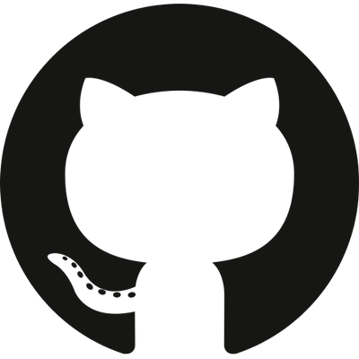
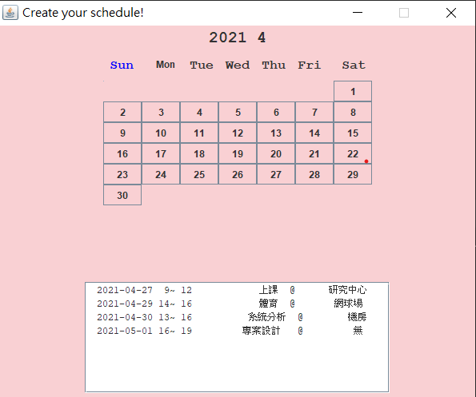
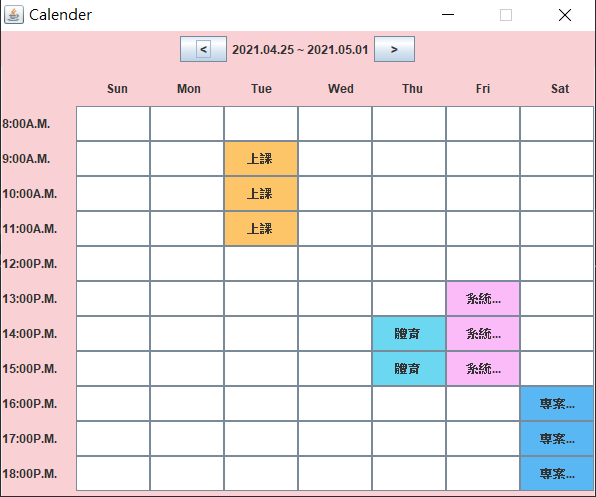
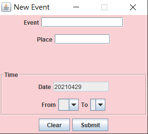

<!DOCTYPE html>
<html lang="en" dir="ltr">

<head>
    <meta charset="utf-8">
    <meta name="viewport" content="width=device-width, initial-scale=1.0">
    <title>Home Page</title>
    <link type="text/css" href="index.css" rel="stylesheet">
</head>

<body></body>

<ul>
    <br>
    <li><a href="#about_me">關於我</a><br></li>
    <li><a href="#edu">學歷</a><br></li>
    <li><a href="#skill">技能專長</a><br></li>
    <li><a href="#project_1">Create Your Schedule!</a><br></li>
    <li><a href="#project_2">Node.js</a><br></li>
    <li><a href="#project_3">LINEBOT</a><br></li>
    <li><a href="#project_final">宅生活</a><br></li>
    <li><a href="#others">Others</a><br></li>
</ul>

<div>

    <a name="about_me"></a>
    <div>
        
    </div>
    <h1>About Me</h1>

    <h2> 陳偉綸(WeiLun Chen)</h2>


    <br>

    <h3>目前為政治大學四年級資訊管理學系的學生，喜歡接觸各式程式語言</h3>
    <h3>個性較內向害羞。在大學的團隊分工中，和上台報告相比，我更熱衷於選擇程式開發的部分，也因此我在程式方面也學到更多東西，希望藉此能夠對於未來有更進一步的認識。</h3>
    <br>
    <br>

    <h3>出生日期: <a>2000/06/12  (22歲)</a> </h3>
    <h3>E-mail: <a>henly0612@gmail.com</a></h3>
    <h3>聯絡方式: <a>0939-680-370</a></h3>
    <h3>居住地: <a>新北市永和區民生路46巷14號7樓</a></h3>


    <a href="https://www.facebook.com/henly.chen.33"></a>&emsp;
    <a href="https://www.instagram.com/henly13/"> </a>&emsp;
    <a href="https://github.com/henly13"> </a>&emsp;
    <a href="https://leetcode.com/henly13/  "> </a>
    <br>


    <a name="edu"></a>
    <h1>學歷</h2>
        <h3>政治大學</h3>
        <h3>科系名稱: 資訊管理學系</h3>
        <h3>學歷: 大學部</h3>
        <h3>就學期間:2018/09 ~ 2022/06 (預計今年六月畢業)
        </h3>
    </h1>

    <a name="skill"></a>
    <h1>技能專長</h2>
        <h3>語文能力: 外文-英文 聽(可) 說(可) 讀(可) 寫(可)</h3>
        <h3>使用工具: JAVA Python</h3>
        <h3>作業集: 由於還在就學當中，尚未有任何的實務開發經驗，因此想利用一些以前在校的期末作品、練習來介紹目前我曾接觸過的語言。</h3>


</div>


<div class=project1_ss>
    <a name="project_1"></a>
    <h1>Create Your Schedule!</h1>
    <h3>主要語言為JAVA，並使用XAMPP內建的Apache搭建簡易伺服器，並以phpMyAdmin作為資料庫管理工具，儲存資料。</h3>
    <h3>這是我在學校第一個接觸的程式語言(JAVA)，同時這項作品也是在大學第一個和組員一起合作完成的期末作業。</h3>
    <!-- <a target="_blank" href="./project1_ss1.png"></a>
    <a target="_blank" href="./project1_ss2.png"></a>
    <a target="_blank" href="./project1_ss3.png"></a> -->

</div>


<br>

<div>
    <a name="project_2"></a>
    <h1>Node.js</h1>
    <h3>主要的應用是建立本機伺服器、表單處理、和及時生成網頁</h3>
    <h3>內容呈現比較像是一個簡易的練習：試著蒐集使用者的input，以ejs模板動態生成網頁(不須經過資料庫、無法保留儲存資訊)；或是使用MongoDB資料庫來儲存訊息內容。</h3>

</div>

<div>
    <a name="project_3"></a>
    <h1>LINEBOT回應式機器人</h1>
    <h3>使用的平台為Heroku，資料庫使用的是PostgreSQL，可根據使用者輸入內容來達成回應，或是對於資料庫做出CRUD的動作。</h3>
    <h3>平時是使用python控制bot的互動內容，更新時可以使用git push至Heroku。</h3>

</div>

<div>
    <a name="project_final"></a>
    <h1>宅生活</h1>

    <h3>宅生活是我們畢業專題的題目，主打的是電商爬蟲和生鮮比價，因應疫情來創造宅經濟，透過多個不同的電商相互比價推薦使用者最優惠的方案。後端使用Flask，架設簡易伺服器，資料庫使用Firebase，前端則是使用基本的html+css。專題中，我主要負責的是整個後端、爬蟲腳本以及部分的資料庫。</h3>

</div>

<div>
    <a name="others"></a>
    <h1>其他</h1>

    <h3>除了上述幾個作業集，目前在校也都還有積極學一些本系所開設的課程，像是演算法、資料分析、數據爬蟲…等。 自學的部分除了上述所提到的Node.js以及LINEBOT外， 先前也有試著學一些Android App的基本概念(如生命週期、資料存儲、數據模塊化、頁面切換…)， 雖然這些觀念是以往沒接觸過的，但是透過認識並學習，我才能更明確了解各領域之間所帶來的魅力。
    </h3>

</div>

<div>
    <a name="future"></a>
    <h1>自我期許及未來展望</h1>
    <h3> 在升大三的那個暑假(去年)，我開始有危機感，驚覺大學好像只給了我們釣竿，卻並未教我們如何在這社會上生存立足。我開始詢問親戚、友人、甚至是教授，得到的答案不外乎是實習以及考研究所。 </h3>

    <h3> 我曾經有想過找暑期實習。但不幸的是，當時恰逢疫情年，再加上接觸的語言並不多，最終現實迫使我放棄了這個念頭。 </h3>

    <h3> 幸運的是，我的指導教授給了一些建議，建議我利用暑假去「嘗試」各種語言。從區塊鏈(以太坊的智能合約應用)，到上面所提的LINEBOT回應式機器人...等，都是暑假自學得來的結果。 </h3>

    <h3> 今年，我已具備新鮮人應該要有的技術底子、好奇心及永不放棄的精神。希望能夠透過這個暑假，充實、磨練自己，增加在社會上生存的競爭力!</h3>
</div>


</body>

</html>